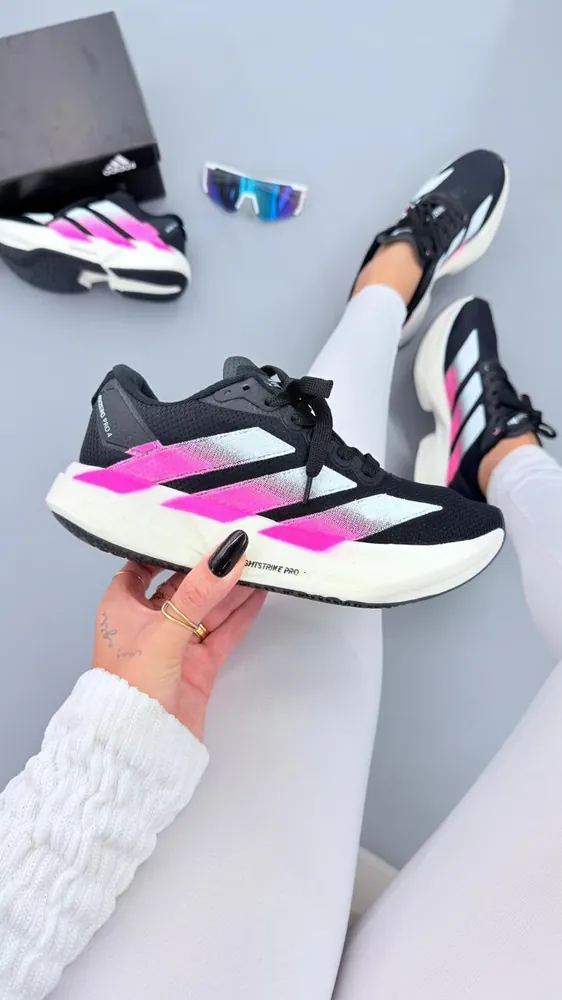

Adidas
Consulte
Valores sob consulta. Fale com a gente para consultar valor, tamanho e disponibilidade.
Preto e pink
Tamanhos: consulte disponibilidade.
Consultar este modeloTênis Adidas Adizero com Lightstrike Pro no solado. Disponível nas cores preto e pink, branco e rose gold, branco e rosa, e azul e rosa. O nome segue o que aparece no próprio tênis.
Cores neste modelo: Preto e pink, Branco e rose gold, Branco e rosa, Azul e rosa.